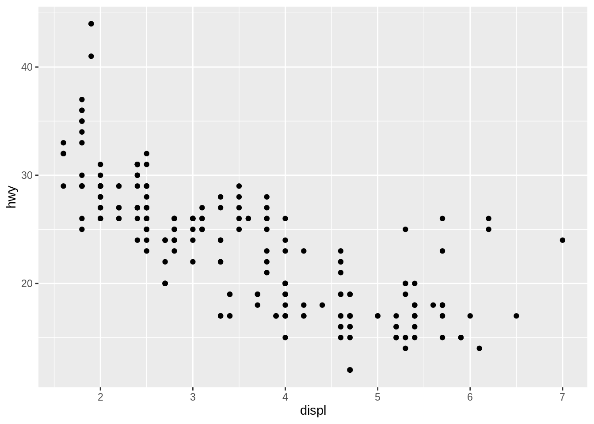
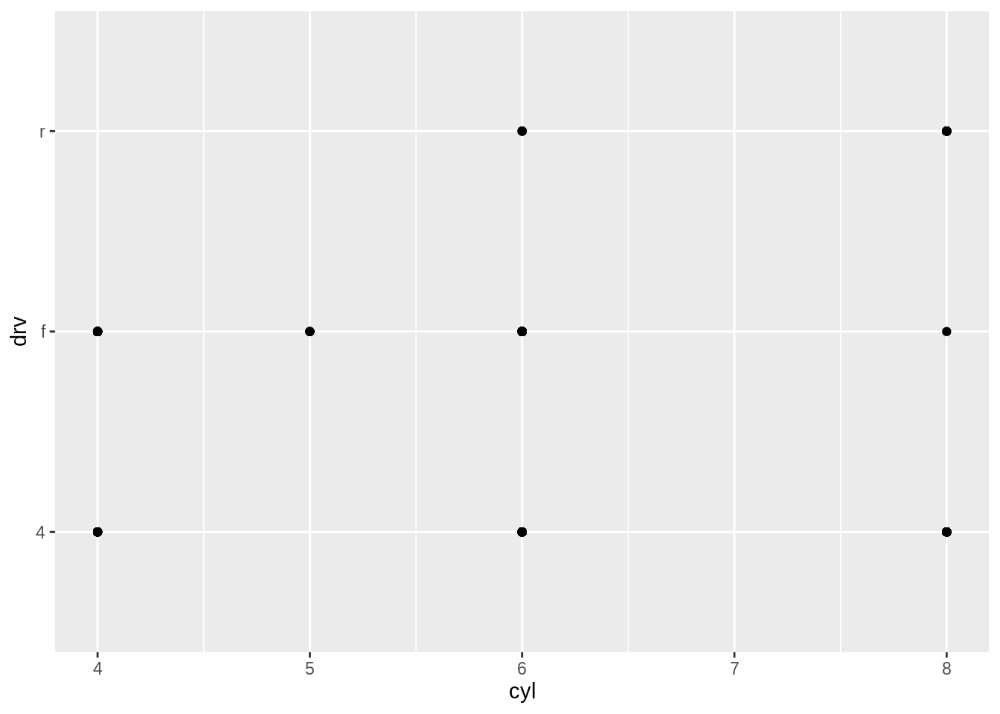
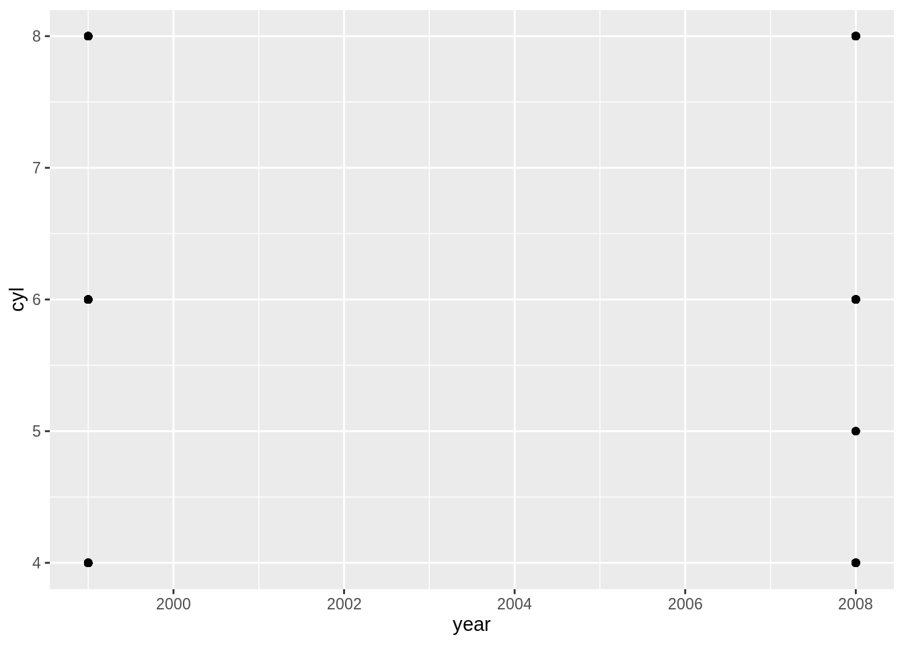
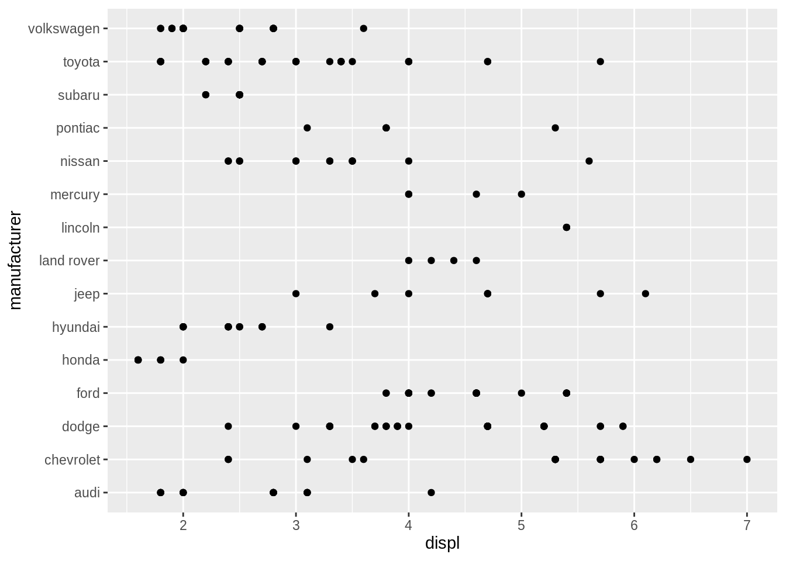

Scatterplots
Kirill Müller, cynkra GmbH
Show mpg on console
Print the mpg dataset to your console.
► Solution:
mpg## # A tibble: 234 x 11
## manufacturer model displ year cyl trans drv cty hwy fl class
## <chr> <chr> <dbl> <int> <int> <chr> <chr> <int> <int> <chr> <chr>
## 1 audi a4 1.8 1999 4 auto(l… f 18 29 p comp…
## 2 audi a4 1.8 1999 4 manual… f 21 29 p comp…
## 3 audi a4 2 2008 4 manual… f 20 31 p comp…
## 4 audi a4 2 2008 4 auto(a… f 21 30 p comp…
## 5 audi a4 2.8 1999 6 auto(l… f 16 26 p comp…
## 6 audi a4 2.8 1999 6 manual… f 18 26 p comp…
## 7 audi a4 3.1 2008 6 auto(a… f 18 27 p comp…
## 8 audi a4 quat… 1.8 1999 4 manual… 4 18 26 p comp…
## 9 audi a4 quat… 1.8 1999 4 auto(l… 4 16 25 p comp…
## 10 audi a4 quat… 2 2008 4 manual… 4 20 28 p comp…
## # … with 224 more rowsRStudio’s view pane
View mpg in RStudio’s dataset pane (via View()). Display all Audis sorted by year then cylinder. What is the maximum number of highway miles per gallon in this dataset?
view(___)► Solution:
view(mpg)- Filtering works by clicking on the “Filter” button, then entering a text (for text columns) or restricting the range of values (for numeric columns).
- Arranging works as usual by clicking on a column header. Because the sort operation is stable, you can sort by two variables by first sorting by the second variable, then by the first.
- The 1999 VW Jetta 1.9 and VW New Beetle 1.9 have the best highway economy, both will drive you 44 miles for each gallon of fuel.
- Note that the view pane currently shows at most 100 columns.
Scatterplots
Create a few scatterplots using the following template (here with hwy versus displ):
ggplot(data = mpg) +
geom_point(mapping = aes(x = displ, y = hwy))Share particularly interesting or boring examples you might encounter. Did you find anything surprising?
► Solution:
ggplot(data = mpg) +
geom_point(mapping = aes(x = displ, y = hwy))
More examples:
ggplot(data = mpg) +
geom_point(mapping = aes(x = cyl, y = drv))
ggplot(data = mpg) +
geom_point(mapping = aes(x = year, y = cyl))
ggplot(data = mpg) +
geom_point(mapping = aes(x = displ, y = manufacturer))
ggplot(data = mpg) +
geom_point(mapping = aes(x = cty, y = hwy))Convert units
Can you plot highway fuel economy given as liters per 100 kilometers against engine displacement?
Hint: Use the formula 235 / hwy to convert from miles per gallon.
ggplot(data = ___) +
geom_point(mapping = aes(x = displ, y = ___))► Solution:
ggplot(data = mpg) +
geom_point(mapping = aes(x = displ, y = 235 / hwy))Overplotting
How can you reduce overplotting? Use your favorite search engine to find out.
ggplot(data = ___) +
geom____(_____)► Solution:
Jitter and transparency are two options:
ggplot(data = mpg) +
geom_jitter(mapping = aes(x = displ, y = 235 / hwy))
ggplot(data = mpg) +
geom_point(
mapping = aes(x = displ, y = 235 / hwy),
alpha = 0.3
)
It’s also possible to combine them:
ggplot(data = mpg) +
geom_jitter(
mapping = aes(x = displ, y = 235 / hwy),
alpha = 0.3
)
More exercises
Find more examples in Section 3.2.4 of the “R for data science” book (http://r4ds.had.co.nz).
Copyright © 2019 Kirill Müller. Licensed under CC BY-NC 4.0.